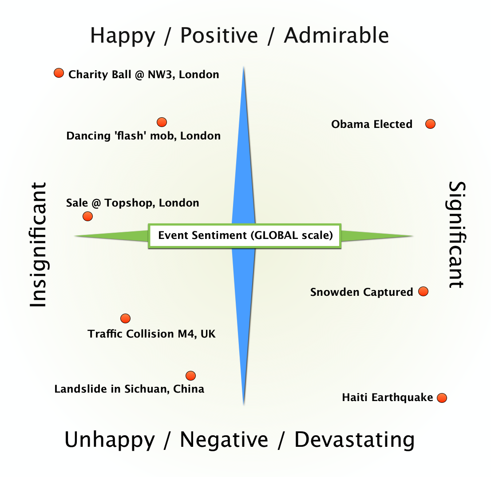

App: Discover
The Discover app displays events to the user.
The primary view is a full-screen map of a defined area with interactable pins/panels highlighting events specific to the niche and timeline searched for by the user.
Example search for "popular events in London"

A search via the Discovery app allows the following parameters to be defined:
- Topic / Genre
- Name / Descroption (partial search)
- Timeline: Beginning
- Timeline: Ending
- Timeline: Exceptions
- Timeline: Length
- Location: LatLong / Town / City / Country
- Location: Radius
An example search would be:
Search for any Sporting event that includes, in its description, the word "refreshments" and that occur(s|ed) between 7pm Yesterday and 7pm Tomorrow within 1 mile of Camden, London.
A search can be generic or specific. The amount of events shown will be dependent upon the specificity of your search and the events' respective relative popularity.
A presidential-election-event, for example, is likely to display quite prominently on a "global: all events" search, while a local musical concert is less likely due to its relative popularity being less. A more specific search, such as that yielded by only searching within your locality, would then make that event more prominent, as it'll then be relatively greater in popularity than its local counterparts.
Event Sentiment
Event Sentiment is a location-dependent measure of an event's popularity and an absolute measure of the positive/negative feelings surrounding the event.
It is of vital importance that Yip can discern the nuanced differences between events to best facilitate discovery and exploration.
On a global scale, the event-sentiment concept would look like this:
